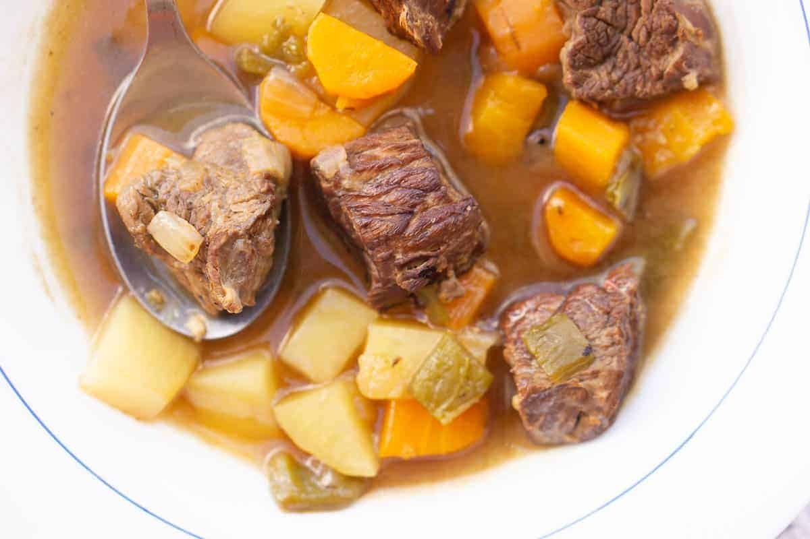

Odin Recipes

Cheap, easy, and comforting — Spanish beef stew is a delicious and hearty meal that is simple to prepare. If you’re a fan of impressive one-pot dinners, this is the recipe for you. Every country has its version of beef stew, and Spain is no different. Spanish beef stew is also known as Spanish beef estofado, carne guisada, and carne en salsa. Its preparation varies depending on the chef, but it’s always comfort food at its best!
Ingredients
Beef:
- Ask your butcher for a piece of good stewing meat. I especially like using beef chuck that is well-marbled. In Spain, we often use leaner cuts (such as aleta or jarrete. These take a long time to cook but the results are delicious! Note that this recipe can also be used with pork — here in Spain we often switch them out.
Vegetables
- I use the most classic combination of vegetables here. If you prefer to use red bell pepper instead of green, it works well. Shallots are also a lovely addition I’ve tried.
Potatoes:
- I like using small red or fingerling potatoes, or Yukon Golds. You want a waxy boiling potato that won’t break down in the stew.
Wine:
- Use red wine, white wine, or even dry sherry wine for this dish. Each will change the flavor, but each is delicious. I usually use what I have open!
Directions
- Begin by sprinkling salt and pepper over your beef. Heat a couple of tablespoons of olive oil in a heavy pot (I used a Dutch oven) and when hot add the beef in batches and sear on all sides. Remove each piece once well seared.
- Now add the diced bell pepper, onions, and garlic and sauté over a medium heat. Keep cooking, allowing the vegetables to become tender and browned (but don’t let them burn). Add a splash of water if necessary.
- Now add the diced carrots and the wine. Let the wine reduce by two thirds, and then add back the seared beef and cover with water (or beef stock).
- Cover the stew and cook on a low simmer for 1.5 hours. Then add the diced potatoes, and cook uncovered for about 20 minutes longer, or until the potatoes are cooked through. Taste and adjust for salt